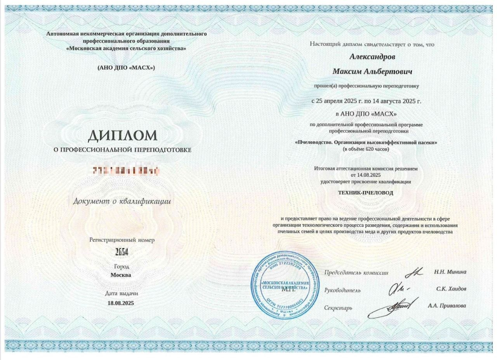
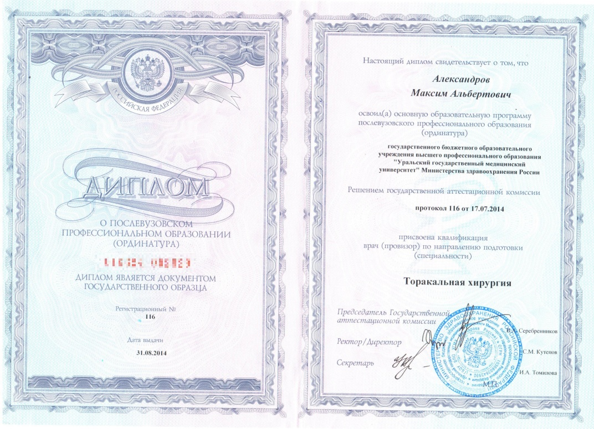

Документы об образовании
Дипломы, сертификаты и свидетельства о повышении квалификации

Диплом
Педиатрия, 2011

Ординатура
Торакальная хирургия, 2014

Профпереподготовка
Функциональная диагностика, 2018
Аккредитация
Кардиология, 2023
Повышение квалификации
Эхокардиография, 2022
Сертификат
Амбулаторная терапия, 2024